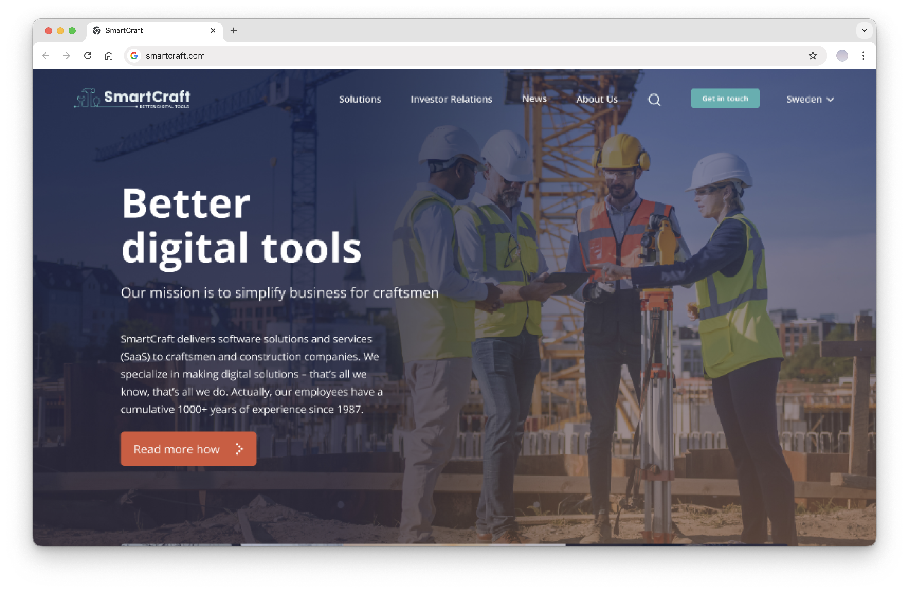
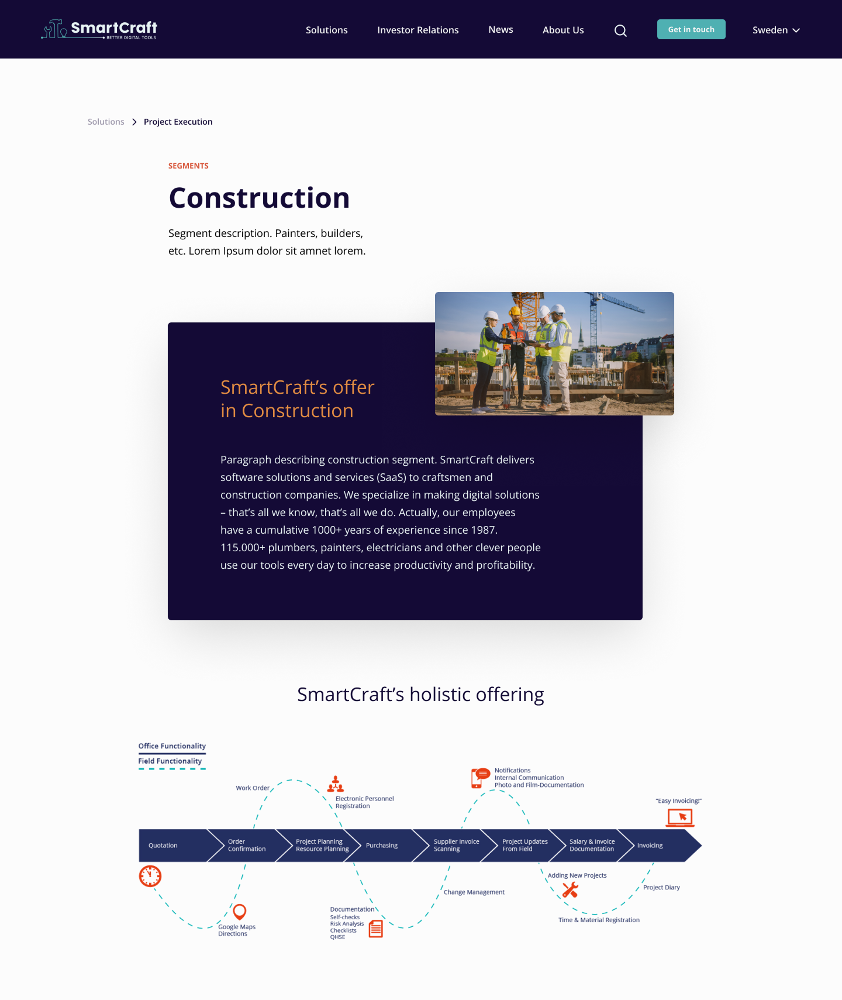
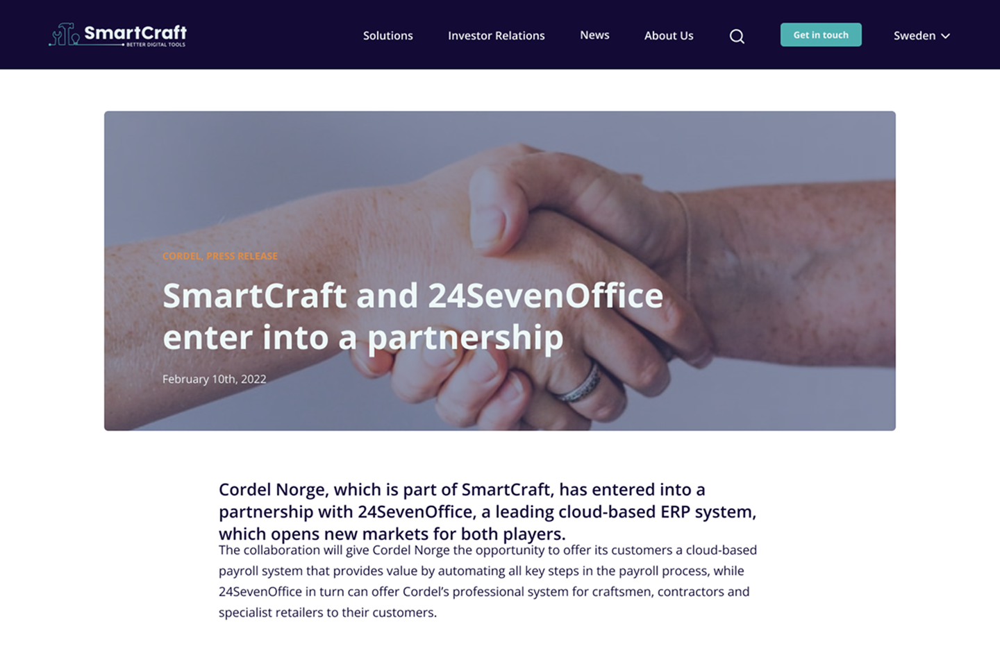
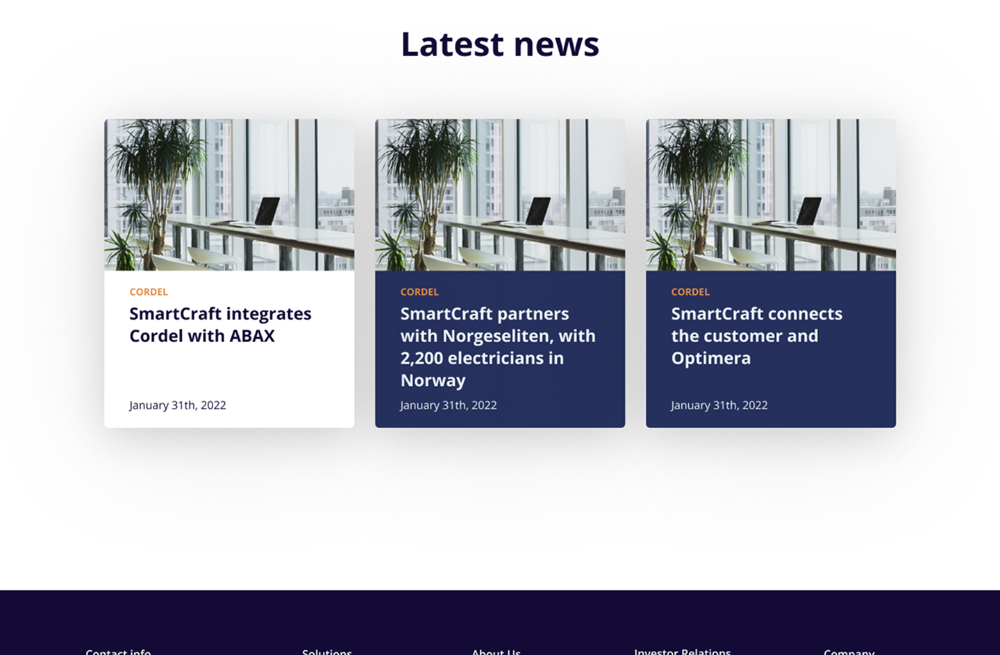
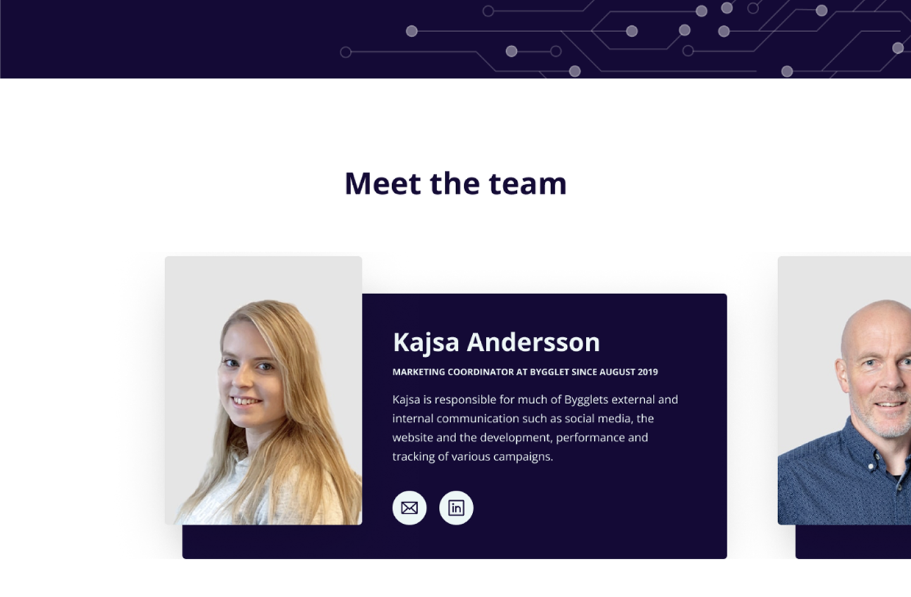
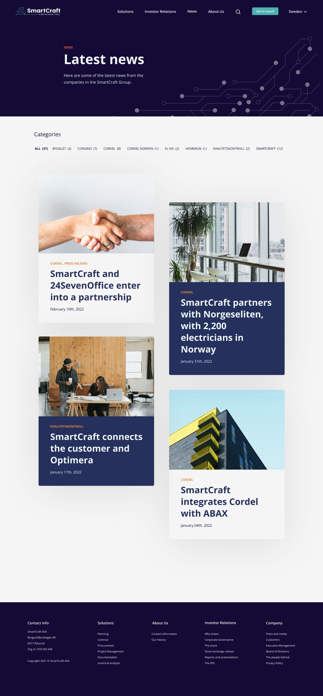
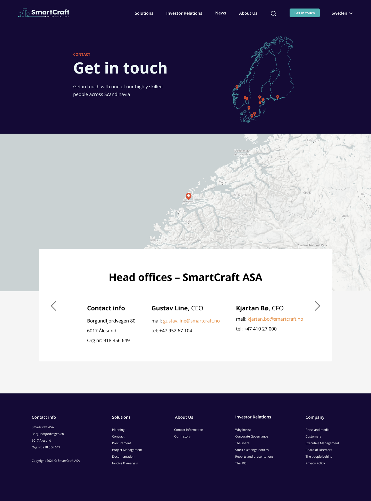

SmartCraft — Website Design
Designing a full website from scratch for a Scandinavian software company, building credibility, structure, and warmth for an audience that spans tradespeople, enterprise buyers, and investors.

SmartCraft is a Scandinavian software company serving craftsmen and construction companies across Norway, Sweden, and Finland. When they came to design agency Amply, they didn't have a real website, just a basic online presence that didn't reflect who they were or what they offered.
The brief was clear: create something credible, structured, and approachable. A site that felt professional enough to speak to enterprise customers, but warm enough to reflect a company built around the people who work with their hands.
I was initially brought in to design a single page. The work landed well enough that Amply expanded the project, and I stayed on to help design the entire website.
Problem statement
SmartCraft needed a website that could serve multiple audiences (contractors, installers, and enterprise buyers) while communicating a clear, trustworthy identity from scratch. How do you build something that feels both structured and human, without the foundation of an existing design language to build on?
Outcome
The project grew from a single-page brief into a full 10+ page website. SmartCraft were delighted with the result, and the Amply team were generous in their feedback about the quality of the collaboration. The site served SmartCraft well at launch and became a foundation they continued to build on.
Collaborative Designer Inside an Agency Process
This wasn't a solo project, and I won't frame it as one. I worked alongside Amply's lead designer as a close collaborator, not running the engagement, but contributing meaningfully to the decisions that shaped the product.
My contributions covered:
- Information architecture, structuring a site that could serve contractors, installers, enterprise buyers, and investors without feeling fragmented
- Layout direction, establishing the visual logic and page templates that carried through the whole site
- Typography and colour, building a system that felt credible and warm, using a dark navy and orange palette that gave SmartCraft a distinct, professional identity
- Component design, creating reusable elements across pages including hero sections, solution cards, news templates, search results, and navigation
- Blog and news templates, designing a content system flexible enough to handle press releases, partnerships, and product news
Three Decisions That Shaped the Site
A colour system built for trust and warmth
SmartCraft's audience are practical people: contractors, plumbers, electricians. A cold, purely corporate aesthetic wouldn't resonate. We landed on a deep navy as the anchor, with a warm orange as the primary action colour. The combination read as serious and established, but with energy. The "Get in touch" CTA carrying the orange throughout every page created a consistent conversion thread across the site.
IA that serves multiple audiences without confusion
One of the core challenges was that SmartCraft serves very different people: tradespeople using their software daily, enterprise buyers evaluating a purchase, and investors tracking a listed company. The navigation structure needed to serve all three without any of them feeling like an afterthought. We organised the site into clear segments (Solutions, Investor Relations, News, About Us) with a country and language selector that acknowledged SmartCraft's Scandinavian footprint.
Templates that scale
Rather than designing every page in isolation, I focused on building a component system that Amply and SmartCraft's team could extend. The news and press release template, search results layout, and solution sub-pages were all designed to be reusable and consistent, so the site could grow without breaking.






A Foundation They Continued to Build On
The quality of the first page led directly to Amply expanding the project scope to the full website, a real signal that the work was landing. SmartCraft had a professional online presence they were proud of, and Amply had a collaborator they trusted.
For me, working inside someone else's agency process was its own design challenge: adapting quickly, earning trust early, and delivering quality under constraints I didn't set. The goal was simple: make the lead designer's job easier, and do it well enough that it shows.